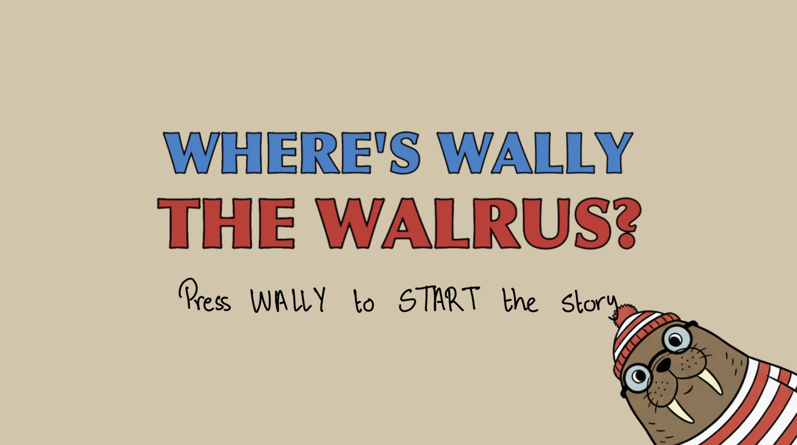
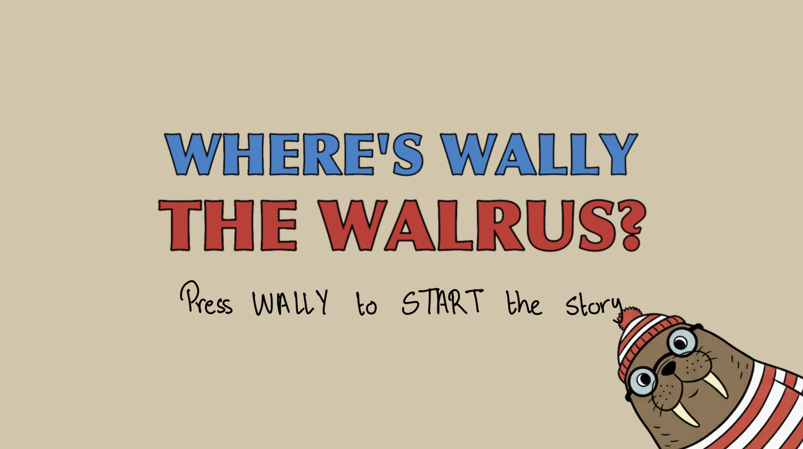
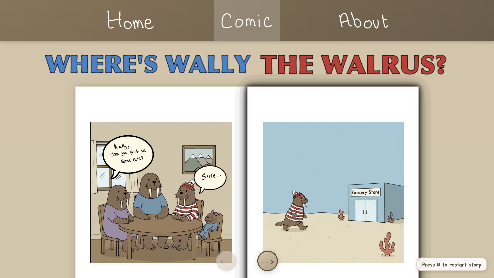
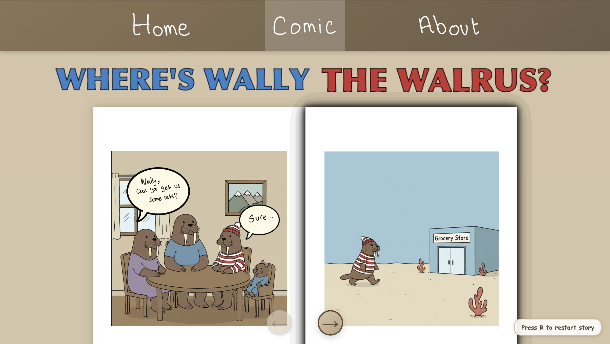
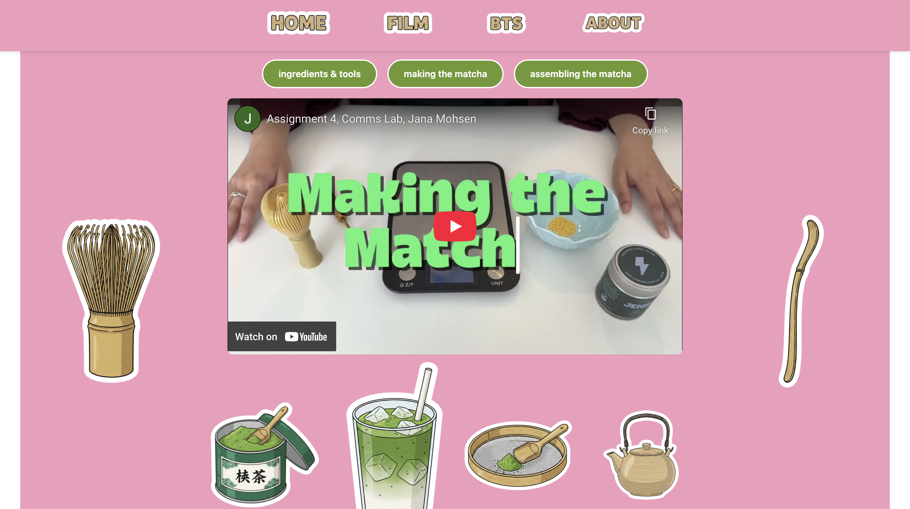
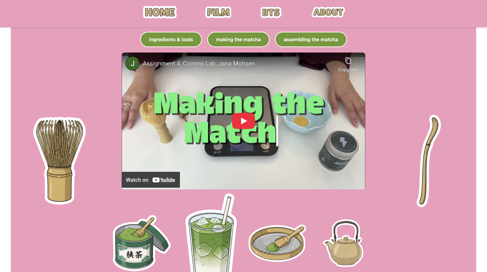

Communications Lab Portfolio
This website is my portfolio for the Fall Communications Lab course. It gathers my four main projects in one Minecraft-inspired space: a 30MFF video, an interactive comic, a sound project, and a short film.
Each section includes a short description, a direct link to the project, and a small peek behind the scenes through images or audio extras. Scroll down, follow the chicken, and explore how each assignment pushed my storytelling and technical skills in a different direction.
30MFF Video Project
“My 30MFF Film” follows a casual walk of a senior student at NYUAD between classes, capturing the raw perspective of daily life and how an ordinary convenience-store stop becomes a moment of reset. The filming intentionally adopts a laid-back, unpolished style to reflect the spontaneity of the experience, inviting the viewer into a personal and contemplative moment.
View 30MFF WebsiteComic Project
The interactive comic “Wally’s Adventure” begins when Wally is sent to the store for nuts and finds a mysterious note that sends him into a choose-your-own-path experience. Through simple yes-or-no decisions, the story transforms an everyday errand into an unexpected journey, allowing the reader to shape how the narrative unfolds.
View Comic Website 

 

Sound Project
“Girl Talk: Real Conversations, Real Women” is a podcast-style sound project that creates a safe space for honest, unfiltered discussions about life, careers, and everyday challenges women face. The project aims to feel like a supportive friend who keeps it real, with episodes such as “Girl Math” and “Pink Tax” blending personal experience with light social commentary.
View Sound ProjectBloopers
Video Project
“Matcha Story: The Story of a Perfect Matcha Latte” documents the process of crafting the ideal matcha latte, from the origins of the matcha to its preparation and final presentation. Through simple visuals and narrative, the project highlights the ritual and sensory details that make the drink feel like a calm, intentional moment in a busy day.
View Video Website

 
